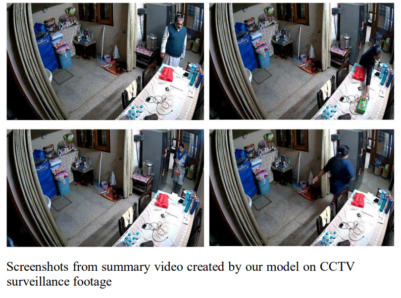
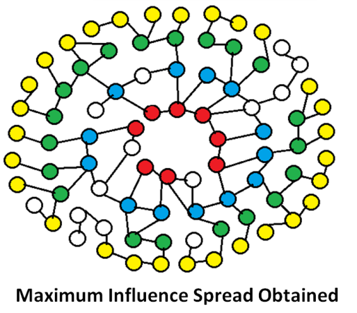
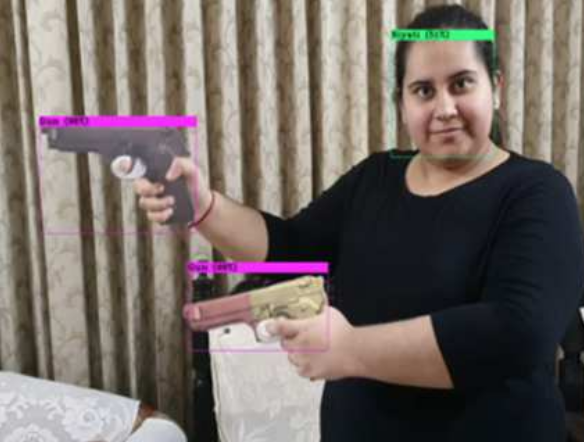
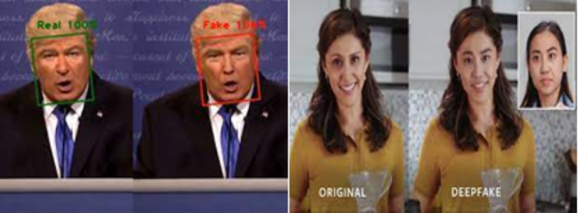

|
Nishit Anand
I am a final-year MS CS student at the University of Maryland, College Park. My research focuses on Multimodal LLMs, AI Agents, and Audio understanding models under the guidance of Prof. Dinesh Manocha in the GAMMA Lab and Prof. Ramani Duraiswami in the PIRL Lab.
Before my Master's, I worked as a Research Scientist at Radien, a Seattle-based AI startup funded by the Allen Institute for AI (AI2). There, I built agents to predict visual similarity in UI elements and intelligently simplify codebases. I was also the Founding Research Engineer at Ananas Labs, a Bengaluru-based startup founded by a former Staff Research Scientist at Google Research India. I developed our low-latency Indic-SpeechLLM, optimizing it for our app using model quantization, and researched a novel multilingual phoneme-based tokenizer to reduce token inefficiency in Indic languages.
Prior to my industry roles, I was a Research Fellow at the Vision and Graphics Lab, IIT Delhi, under Prof. Chetan Arora. Working on a government-funded project, I created state-of-the-art Vision Transformer-based OCR models for 13 Indian languages, deploying them with inference optimization and caching techniques for higher throughput. Earlier, as a Research Engineer at the Autonomous Networked Systems Lab at IIIT-Delhi under Prof. Saket Anand, I led the Driver Status Monitoring (DSM) module of a $300K government-funded autonomous driving project. I trained and optimized facial landmark detection and object detection models for deployment on our custom Android app and NVIDIA Jetson devices.
I completed my B.Tech (Honours) in Computer Science from Jaypee Institute of Information Technology Noida (JIIT Noida) in 2022, graduating in the top 5% of the department and scoring the highest grades in all final-year courses. I have also had the privilege of collaborating with Prof. Salman Khan, Prof. Mohamed Elhoseiny, and Prof. Ruohan Gao, among other exceptional mentors.
Email /
CV /
Google Scholar /
Github /
LinkedIn
|
|
News
- [2025/10] 🎉 MMAU-Pro accepted to AAAI 2026!
- [2025/09] 🎉 Two papers accepted to EMNLP 2025! MultiVox received an Outstanding Paper Nominee award and EgoIllusion was selected for Oral Presentation!
- [2025/07] 🎉 Aurelia accepted to ICCV 2025!
- [2025/05] 🎉 Paper on Linguistic Variations in Audio-Language Models accepted to NAACL 2025!
- [2024/12] 🎉 TSPE paper accepted to SALMA Workshop at ICASSP 2025!
- [2024/08] 🎓 Started MS in Computer Science at University of Maryland, College Park.
- [2024/02] 📄 VidSum - Video Summarization paper now available on IEEE Xplore!
- [2024/02] 🏆 Honored to be serving as a Judge at the LLM Hackathon, Vendata Event at Oneiros Technical Fest 2024, Manipal University Jaipur.
- [2023/10] 🎉 Video Summarization Paper accepted to ICI 2023!
- [2023/05] 🎉 Hurst-based Influence Maximization Paper accepted to Journal - Expert Systems!
- [2023/04] 💼 Joined IIT Delhi as a Research Assistant in the CS Dept, working under Dr. Chetan Arora in Vision & Graphics Lab on MultiLingual OCR ML Models for Indic Languages Project.
- [2022/06] 💼 Joined IIIT Delhi as a Research Engineer under Dr. Saket Anand to work in the Perception module of the Autonomous Driving Project - ALIVE.
- [2022/05] 🎓 Graduated from Jaypee Institute of Information Technology Noida, with B.Tech in Computer Science with Honors!
- [2022/02] 🎉 SaveLives Threat Detection Paper accepted to ICI 2022!
- [2021/09] 🎉 DeepFake Detection Paper accepted to ICSC 2021!
|
|
|
Listening between the Lines: Towards Paralinguistic Understanding of Speech
Nishit Anand,
Jiaqi Su,
Ke Chen,
Yunyun Wang,
Dinesh Manocha,
Ramani Duraiswami,
Zeyu Jin,
Rithesh Kumar
ICASSP, 2026 (Under Review)
|
|
|
A Closer Look into Modality Misalignment in Large Audio Language Models
Ashish Seth*,
Sonal Kumar*,
Ramaneswaran S*,
Nishit Anand,
Utkarsh Tyagi,
Prem Seetharaman,
Ramani Duraiswami,
Dinesh Manocha
ICASSP, 2026 (Under Review)
|
|
|
Gencho: Room Impulse Response Generation via Diffusion Transformers
Jackie Lin,
Jiaqi Su,
Nishit Anand,
Zeyu Jin,
Minje Kim,
Paris Smaragdis
ICASSP, 2026 (Under Review)
|
|
|
Why Stop at Words? Unveiling the Bigger Picture through Line-Level OCR
Shashank Vempati*,
Nishit Anand*,
Gaurav Talebailkar,
Arpan Garai,
Chetan Arora
Under Review
arXiv
A novel line-level OCR approach that processes text in lines rather than words, improving accuracy and context understanding.
|
|
|
MMAU-Pro: A Comprehensive Benchmark for Holistic Evaluation of Audio General Intelligence
Sonal Kumar,
Šimon Sedláček,
Vaibhavi L,
Fernando López,
Wenyi Yu,
Nishit Anand,
Hyeonggon Ryu,
Lichang Chen et al.
AAAI, 2026
arXiv
A comprehensive benchmark for evaluating audio-language models across diverse audio understanding tasks.
|
|
|
MultiVox: Benchmark for Evaluating Multimodal Voice Assistants
Ramaneswaran S*,
Ashish Seth*,
Nishit Anand,
Utkarsh Tyagi,
Sonal Kumar,
Sreyan Ghosh,
Dinesh Manocha
EMNLP, 2025 (Outstanding Paper Nominee)
arXiv
A novel benchmark for evaluating voice assistants on multimodal interactions and complex reasoning tasks.
|
|
|
EgoIllusion: Benchmarking Hallucinations in Egocentric Video Understanding
Ashish Seth*,
Utkarsh Tyagi*,
Ramaneswaran S,
Nishit Anand,
Sonal Kumar,
Sreyan Ghosh,
Ramani Duraiswami,
Chirag Agarwal,
Dinesh Manocha
EMNLP, 2025 (Oral)
arXiv
The first benchmark for evaluating hallucinations in egocentric video understanding models.
|
|
|
Aurelia: Test-time Reasoning Distillation in Audio-Visual LLMs
Sanjoy Chowdhury*,
Hanan Gani*,
Nishit Anand,
Sayan Nag,
Ruohan Gao,
Mohamed Elhoseiny,
Salman Khan,
Dinesh Manocha
ICCV, 2025
arXiv
Test-time reasoning techniques to improve state-of-the-art Audio-Visual LLMs through knowledge distillation.
|
|
|
Do Audio-Language Models Understand Linguistic Variations?
Ramaneswaran S*,
Sonal Kumar*,
Hemant Giri*,
Nishit Anand,
Ashish Seth,
Sreyan Ghosh,
Dinesh Manocha
NAACL, 2025
arXiv
Proposes RobustCLAP, a novel technique to improve audio-language representations that are robust to linguistic variations and paraphrases in text queries, improving text-to-audio retrieval performance by up to 13%.
|
|
|
TSPE: Task Specific Prompt Ensemble for Improved Zero-Shot Audio Classification
Nishit Anand,
Ashish Seth,
Ramani Duraiswami,
Dinesh Manocha
SALMA ICASSP, 2025
arXiv
A novel task-specific prompt ensemble method that improves zero-shot audio classification performance by 16%.
|
|
|
Mitigating Memorization in LLMs using Activation Steering
Manan Suri,
Nishit Anand,
Amisha Bhaskar
Preprint
arXiv
An inference-time approach to reduce verbatim memorization in LLMs using activation steering techniques.
|
|

|
VidSum - Video Summarization using Deep Learning
Nishit Anand,
Rupesh Koshariya,
Varsha Garg
International Conference on Informatics (ICI), 2023
paper
A deep learning approach for automatic video summarization that identifies and extracts the most relevant segments from videos.
|
|

|
A Hurst-based Diffusion Model using Time Series Characteristics for Influence Maximization in Social Networks
Bhawna Saxena,
Vikas Saxena,
Nishit Anand,
Vikas Hassija,
Vinay Chamola,
Amir Hussain
Expert Systems (Wiley), 2023
paper
Proposes a Time Series Characteristic-based Hurst Diffusion Model for influence maximization in online social networks, achieving up to 590% higher influence spread compared to baseline models.
|
|

|
SaveLives - A Real-Time Threat Detection System
Nishit Anand,
Rupesh Koshariya
International Conference on Informatics (ICI), 2022
paper
A real-time system that detects guns and knives from CCTV footage using YOLOv4, achieving 90.35% accuracy and instantly notifying authorities via SMS and WhatsApp to prevent crimes.
|
|

|
IsSwap: Deep Fake Detection
Aakriti Aggarwal,
Siddhant Wadhwa,
Pallav Gupta,
Nishit Anand,
Rashmi Kushwah
International Conference on Signal Processing and Communication (ICSC), 2021
paper
A deep learning-based approach for detecting deepfake images and videos using advanced neural network architectures.
|
|
{kind=link}